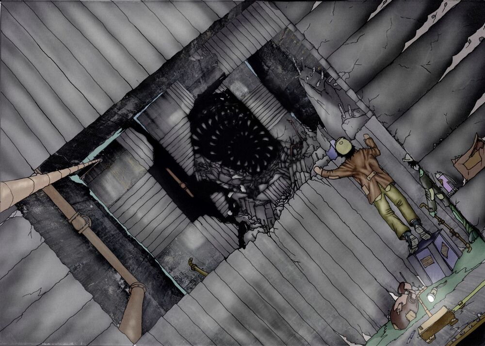

Бетоноед.
Бетоноеды – часть фауны Гигахруща. Не являются постсамосборными организмами, в привычном понимании этого термина, так как не найдено доказательств того, что они собираются сами.
Описание
Наблюдаются разные морфы бетоноедов, не известно, все ли они относятся к одному виду, или же являются полифилетической группой организмов. Объединяет их несколько признаков:
1. Способность синтезировать группу белков – бетоноколлагенов, встраивая их в ткани.
2. Проистекающая из этого резистентность к черной слизи и другим слабоорганизованным последствиям самосбора.
3. Наличие как наружного, так и внутреннего скелета.
4. Cпособность регулировать температуру своего тела и склонность к впаданию в спячку. Многоступенчатый неполный метаморфоз.
5. Запутанная система полов (выделено до 8 типов).
6. Зиготы образуют особую форму – яйца.
7. Преимущественно продолговатая форма тела
Обычно не имеют определённых размеров – если личинки до первой метаморфозы не больше руки взрослого человека, то масса и длина взрослого бетоноеда ничем не ограничены. Имеются сведения об особях, что способны поедать целые блоки. В любом случае, размеры бетоноеда ограничены лишь его способностью к передвижению.
Конечности – прочные и цепкие, разнообразные, могут отсутствовать. Обладают развитым внутренним скелетом, мышцы, управляющие их движениями, обычно расположены в туловище.
Обычно не развивают органы зрения, довольствуясь слухом, ощущением вибраций бетона щетинками, и ямками на поверхности тела с рецепторами различных видов.
Сильно развит материнский инстинкт, охраняют сложно устроенные гнёзда. ВНИМАНИЕ: родовая слизь бетоноеда крайне опасная при попадании на незащищённые участки кожи и слизистых.
Агрессивность: представляют угрозу, стремясь в блоки с большим количеством биомассы (в т.ч. с большой плотностью населения), однако, целенаправленно не охотятся за людьми, из-за низкой скорости передвижения/неэффективности энергозатрат.
Коконизация/окукливание: бетоноеды могут впадать в спячку, покрываясь коконом, частично состоящим из старого панциря. В академической среде идут ожесточённые споры: переживают ли они самосбор в коконе, или они просто ожидают биомассу, что приходит за ним? Или же это просто линька?
Выявление: любой гражданин может определить приближение бетоноеда по мелкой дрожжи бетона, звуку катящегося шара, непосредственном его наблюдении, о чём должен немедленно сообщить в ликвидаторскую службу. Системно этой проблемой занимаются сейсмографические станции отслеживающие передвижения бетоноедов.
Раз в несколько циклов у них происходит так называемый гон: всплеск полового поведения, когда бетоноеды преодолевают тысячи блоков в поисках сородичей, и становятся агрессивными.
Успешные вскрытия
В настоящее время НИИПОиЛ располагает пятью случаями успешного вскрытия кадавров половозрелых бетоноедов, разной степени сохранности. Список пополняется.
1)«Жиробес» – был найден в окрестностях Строения ДПИН-2334а, обладал значительными запасами поверхностной жировой ткани, вследствие чего, был принят местными жителями за сохранившийся складской запас сала. Был опознан после вмешательства ликвидаторской службы. Имел упрощенное строение, возможно, несмотря на крупные размеры, не был половозрел.
2)«Бегунок» – был уничтожен в результате ликвидационных действий, частично обуглен. Обладал длинными конечностями, легкие имели специальные воздушные мешки, позволявшие дополнительно прогонять через них воздух.
3)«Домосед» – имел менее бетонизированные ткани, чем его предшественники, обогащенные металлами редкоземельной группы, сложно устроенные глаза. Обитал в транспортной магистрали ПО-:99, судя по останкам дрезин и ж/д составов в его пищеварительной системе, имел отношение к прерыванию транспортного сообщения между Гигастроениями НО-678 и НО-676. Хорошо изучена пищеварительная система – с системой побочных зобов и кишок, относительно крупный надчелюстной ганглий, скорее всего, имел сложное строение, со спиральной симметрией.
4)«Вшивец» – обнаружен в заброшенном блоке. Останки сильно разложились, осмотр был сильно затруднён из-за многочисленных паразитов, покидавших его тело.
5)«Псевдоживой» Обладал жизнеспособными покровными тканями, в межфасциальной клетчатке располагались яйца. Останки самоуничтожились при попытке взять биопсию гроздьевидных структур, которые взорвались, вследствие присутствия в них легковоспламеняющейся смеси органического происхождения.
Заражение бетоноедной родовой слизью
Этиология: родовая слизь бетоноеда, может иметь холодцовый и паутинный вид.
Патогенез:
Родовая слизь, являет собой ассоциацию плюрипотентных клеток бетоноеда, гиф специфического грибка ШТА-145, шигелло-подобных палочек, активно обменивающимися плазмидами как с клетками бетоноеда, так и с клетками хозяина.
Изначально бетоноедной колонии очень трудно закрепиться. Первичный аффект носит инфильтративный характер. При этом на коже/слизистых зараженного появляются уплотненные участки, серого цвета. Следует заметить, что при поражении кожи – наблюдается относительно более доброкачественное течение в краткосрочной перспективе. Распространяется гематогенно, лимфогенно и имплантационно. При поражении слизистых/поврежденных кожных <покровов наступление стадии диссеминации ускоряется. Поражаются заносом колоний первоначально паренхиматозные органы: легкие, печень, селезёнка, за исключением головного и, спинного мозга, которые затрагиваются в последнюю очередь.
Диагностика:
Лихорадка реммитирующего характера, слабость, ночной пот, снижение массы тела.
Лабораторные изменения: повышение СОЭ, СРБ, Маркеры самосборного поражения - только неспецифичные.
На поздних стадиях: Биоптаты – колонии тканей.